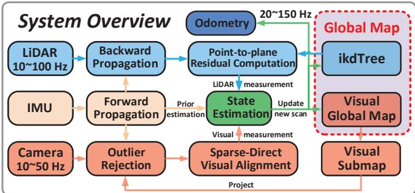
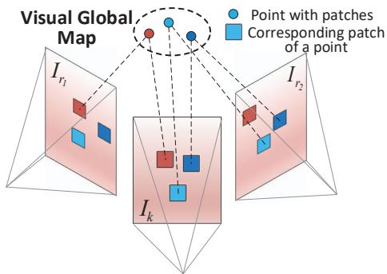
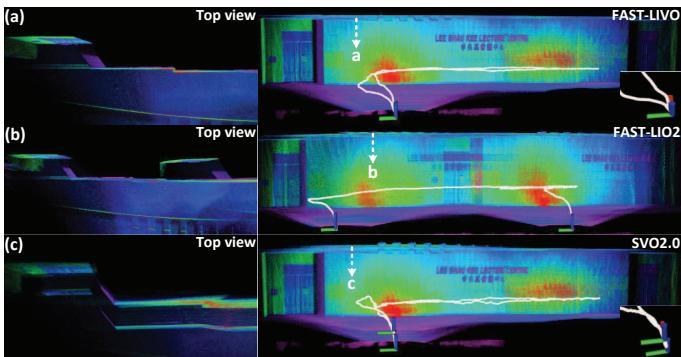
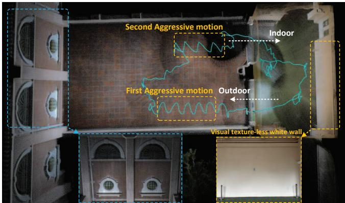

阶段 E · 多传感器融合 / Lesson 0099
FAST-LIVO（2022）：视觉直接复用激光地图
视觉不提特征、不三角化，直接把激光已经建好的地图当成自己的地图用 🧩
🎯 主题：紧耦合 LIVO · 视觉直接复用激光点云地图
👥 作者：HKU-MARS 组（张富康等）
📅 2022 · Fast and Tightly-coupled Sparse-Direct LiDAR-Inertial-Visual Odometry （IROS）
本节目标
读完你应该能：说清已有松/半松耦合方案被批评在哪；解释「视觉复用激光地图」到底复用的是什么；讲清 v1 是异步更新、维护两份地图；并知道它留下的三个短板如何引出 v2。
和前面课程怎么接
接第四季 0084 课（FAST-LIO2：ikd-Tree 点云 + ESIKF）——v1 的 LIO 直接改自它；接第三季 0046 –0050 课（DTAM/DSO/SVO 直接法：自己估逆深度）——本课最关键差别就是「深度由激光白送」。先回链第一季 0006 课的「松紧耦合」。
1. 它要解决什么：已有松耦合方案为什么不够
先定位。FAST-LIVO 是 HKU-MARS 组在 2022 年（IROS）发表的 LIVO 系统，摘要里说它「建立在两个紧耦合的直接法里程计子系统之上：一个 VIO 子系统和一个 LIO 子系统」，两者在一个 ESIKF 里联合融合。它是本组（紧耦合 LIVO）的地基篇 。
它要解决的第一个问题，是对已有方案的批评 。原文在引言里点名了当时一类「联合 LIVO」做法（它举了 R2LIVE、LVI-SAM）：它们「虽然联合融合了状态向量，却各自处理每种数据、没有考虑测量层级的耦合」，而且特征提取加滑动窗口优化很费算力。翻译成人话就是——
原文批评的核心
很多「紧耦合」其实只在状态层 耦合：激光和视觉各自跑完自己的前端、各自算出一堆残差，最后才在一个滤波器/优化器里把状态凑到一起。但测量层 没有耦合——激光不知道视觉在测什么，视觉也不知道激光已经量好了哪些几何。这种「各跑各的、末端才融合」的做法，在弱结构、弱纹理环境里特征变少，而且工程上要做大量适配。原文想用「直接法 + frame-to-map」把这件事做轻、做紧。
注意这里的措辞：「末端融合」不等于「真紧耦合」 。第一季 0006 课就区分过松耦合（各算各的再投票）和紧耦合（同一份优化里一起解）。FAST-LIVO 的目标，是把视觉和激光真正塞进同一个误差态迭代卡尔曼滤波器 ，而且视觉侧走直接法 （不提特征）。

原图注（Fig. 1）： System overview of FAST-LIVO.怎么看这张图： ① 蓝色那条是 LIO 子系统、红色那条是 VIO 子系统，两者汇入中间的 ESIKF——这就是「两个子系统、一个滤波器」；② 注意图上 LiDAR 全局地图（ikd-Tree）和 visual 全局地图（体素哈希）是两块分开的结构 ，这点下一节会展开；③ 这是全篇骨架图，先记住「蓝红两条线进同一个圆」的形状。
2. 核心机制：视觉怎么复用激光的地图（本课灵魂）
下面这段话是整节课的命根子，请盯紧。
激光雷达已经在它的体素/点云地图里存了「点」和「点拟合出的平面」 。当一帧图像来的时候，FAST-LIVO 的视觉侧不必自己去做三角化、不必自己估计每个像素的深度 ，而是把图像上的像素（更准确地说是图像块 patch）直接投影到激光地图里已经有的几何表面上 ，然后去算光度误差 ——也就是「地图给的参考块亮度」和「当前帧对应位置亮度」差多少。
原文对视觉地图点的原话（贡献 2）是：地图里的点被贴上了图像块（image patches），新图像到来时，把这些点直接投影到新图像上比较亮度。也就是说，视觉地图点就是激光地图点 ——激光量到「这里有个表面」，视觉就复用这个表面，只负责把图案对齐。
别被符号吓到，它的意思非常朴素：
${}^G\mathbf p_i$ 是激光地图里的一个 3D 点 （深度由激光直接给，不估）；
中间那串变换把它从全局坐标搬到「当前相机图像上的像素位置」；
$\pi(\cdot)$ 是投影到图像平面；
$\mathbf I_k(\cdot)$ 是「这个像素在当前图像里的亮度」；
右边 $\mathbf Q_i$ 是贴在地图点上的参考块亮度 ，$\mathbf A_i$ 是参考块到当前块的仿射变形；
整个表达式说：让「当前图像该处的亮度」尽量等于「地图参考块的亮度」 。这就是光度误差。
关键是：这个残差里没有逆深度、没有三角化项 。深度就是 ${}^G\mathbf p_i$ 这个激光点本身。这就是「复用」二字的含义。
视觉复用激光地图：深度由激光白送，视觉只负责把图案对齐
① 激光已经铺好的地图
一面带画框的墙
画框
画框
这些点已被拟合成一块平面
墙面上密布小点 = 激光地图点
② 相机把像素「贴」到平面上
相机
图像块 patch
视觉投到地图里已有的平面
视觉不去自己算深度，它直接问地图：
「我这个像素对应的表面在哪？」
这张图在画什么： 一面前有画框的墙，左半画「激光已经把墙面建成带点、带平面的地图」，右半画「相机来了一帧图像，把图像块沿虚线投到地图上的平面」。
怎么看这张图： ① 左半那一面墙上的小蓝点就是激光点云，绿线是被拟合出的平面（带一个法向箭头）；② 右半红色方块是当前帧里的一个图像块，三条虚线把它的像素连到地图上对应的表面点；③ 右下角那句话是灵魂：视觉不自己估深度，深度是激光点云直接给的 。
要记住的一句话： 深度由激光白送，视觉只负责把图案对齐——所以视觉侧省掉了最贵的一步（深度估计）。
3. 为什么这很聪明：经典直接法最怕的就是自己估深度
为什么说「省掉深度估计」是大事？因为第三季 0046 –0050 课讲过的经典稀疏直接法 （DTAM / DSO / SVO）最头疼的，恰恰就是这件事。
直接法的思路是：拿当前帧的亮度和参考帧的亮度做差（光度误差），靠这个差去优化位姿。但有个前提问题——「当前帧这个像素对应的 3D 点在哪？」也就是它的深度是多少？ 经典直接法手里没有激光，它只能靠逆深度 （inverse depth）去猜：先给每个像素一个深度初值，再在后端反复迭代、滤波，慢慢把深度估准。这个「估深度」既费算力，又容易在弱纹理处塌掉。
FAST-LIVO 的聪明之处，就是把「估深度」这件事整体外包给激光 。激光天生就量到了深度（每个点都有精确距离），而且已经把这些点存进了地图。视觉一来，深度已经是现成的，它只需要做「亮度对齐」。
一句话对照
经典直接法（DSO / SVO）：位姿 + 每个像素的深度 都要一起估 。深度直接从激光地图拿 ——深度不再是待优化变量。
同一个光度误差，一边要额外估深度，一边不用
① 经典直接法（如 DSO）
相机
真实墙面
深度是未知量
要迭代地猜
射线穿过一串候选深度
② LIVO
相机
地图里的平面
不用猜
地图已告诉你它停在哪
射线打到地图上已有平面即停
这张图在画什么： 同一条从相机射向墙面的射线，在两种系统里不同的「深度处理」。
怎么看这张图： ① 左联（经典直接法）：射线一路穿过一排「待估的深度候选」小点，深度是未知量，要反复迭代去猜；② 右联（LIVO）：射线射出去，撞到激光地图里已经存在的平面就停住了，那个停点就是深度，不用猜；③ 注意右联那个蓝点就是激光地图点，绿线是地图拟合平面。
要记住的一句话： 同一个光度误差，一边要额外估深度、一边不用——这就是 LIVO 快的根源之一。
4. 一份滤波器管两份地图（注意：不是「一份地图」）
这里有一条务必纠正的常见误传 ：很多人以为「FAST-LIVO = 同一份地图、同一个滤波器」。这句话只对 FAST-LIVO2 成立，对 v1 不成立 。
★ 重要澄清（按原文如实写）
FAST-LIVO（v1）是「两个地图、一个滤波器」 ：激光全局地图（ikd-Tree 点云）和视觉全局地图（体素哈希 + 贴 patch）是两份分开的结构 ，但它们共用同一个 ESIKF 来融合。视觉侧复用的「激光地图点」，是激光那张点云地图里的点——所以两者在地图内容上有重叠，但在存储结构上是两套 。真正「同一份体素地图」是 FAST-LIVO2（下一课）才做到的。
更要紧的是更新方式 。FAST-LIVO（v1）用的是异步更新 ，不是下一课的「序贯更新」。原文的异步最大后验估计（Eq.11）写的是：如果时刻 $t_k$ 收到激光，就只融合激光残差 $r_l$（图像项权重 $m_c=0$）；如果收到图像，就只融合图像残差 $r_c$（激光项权重 $m_l=0$）。也就是说——
「收到激光只融 $r_l$，收到图像只融 $r_c$」——激光帧和图像帧是交错到达、各自触发一次 ESIKF 更新 的，不是在同一帧里把两者一起灌进去。这跟 FAST-LIVO2 的「序贯更新」（同一帧内多个测量一个一个地更新同一个状态）是两回事。
下面这张图把「异步」画出来：时间轴上蓝色（激光）和橙色（图像）更新交替出现。
一份 ESIKF，但管着两份地图（异步更新）
ESIKF（误差态迭代卡尔曼滤波器）
同一个滤波器，状态只保留当前时刻
LiDAR 地图 = ikd-Tree 点云
激光打的离散点 + 拟合平面
视觉地图 = 体素哈希 + 贴 patch
每个点贴一张参考图像块
时间
激光更新
图像更新
蓝橙交替 = 异步：谁先到谁先触发一次更新
这张图在画什么： 同一个 ESIKF 圆，被两块地图（蓝色激光、橙色视觉）喂数据，时间轴上两种更新交替发生。
怎么看这张图： ① 上方大框是「一个滤波器」，不是两个；② 下方左右两块是两份不同的地图结构 ，别误画成一块；③ 底部时间轴：蓝点和橙点交错，每到一个就触发一次更新——这就是「异步」。
要记住的一句话： v1 是「两份地图、一个滤波器、异步更新」；「同一份地图 + 序贯更新」是 v2 才有的。
5. 状态向量与滤波器
FAST-LIVO 用的是什么滤波器？原文全称是 ESIKF = Error-State Iterated Kalman Filter（误差态迭代卡尔曼滤波器） 。它和第四季 0083 课 FAST-LIO 的 ESIKF 是同源思路（状态是「误差态」，迭代地线性化）。
状态流形与状态向量（Eq.2–3）：
逐个说：
${}^G\mathbf R_I,\,{}^G\mathbf p_I$：IMU 帧相对于全局帧的旋转 与位置 ；
${}^G\mathbf v$：IMU 帧的速度；
$\mathbf b_g,\,\mathbf b_a$：陀螺仪与加速度计的零偏 （随时间随机游走，要估）；
${}^G\mathbf g$：全局重力向量；
注意：v1 的状态是 18 维，没有逆曝光时间 $\tau$ 。$\tau$ 是 FAST-LIVO2 才多加的一维（v2 是 19 维）。这是区分两代的一个小但确切的标志。
激光那一路的残差（Eq.8）是经典的点-面残差 ，平面由最近 5 个点拟合（查 ikd-Tree 邻域）：
其中 $\mathbf u_j$ 是拟合平面的法向、$\mathbf q_j$ 是平面中心——这两者都来自激光地图。视觉那一路就是上节的 Eq.9 光度残差。两者都进同一个 ESIKF。
6. 它有没有用视觉特征？直接法还是特征法
这里要正面回答：FAST-LIVO 的视觉侧走的是直接法，不是特征法。 原文明言它不提取、不三角化、不优化任何视觉特征——它用的是「稀疏直接法」（sparse-direct），和 SVO 一类同源，靠图像块（patch）的光度误差来对齐。
直接法 vs 特征法（回链第三季）
特征法（ORB-SLAM 那一支，见第三季 0043 –0045 ）：先提角点/FAST 特征，做描述子匹配，再算几何。0046 –0050 ）：不提特征，直接拿像素亮度做光度误差。FAST-LIVO 选直接法 ——所以它没有 ORB/FAST 那套，也不需要特征匹配；代价是它依赖「地图给深度」，这正是上一节讲的。
为了让你直观看到「调位姿让块对齐」这件事，下面是原文 Fig.2——它画的就是直接法核心：转动当前帧，让参考块和当前块的亮度差最小。

原图注（Fig. 2）： Changing the pose of current frame in the global frame to minimize the photometric errors between the reference image patches in the visual global map and the corresponding patch in the current frame.怎么看这张图： ① 它画的是「直接法怎么干活」——系统不断微调当前帧的位姿，让地图里的参考块和当前帧里对应块亮度尽量一致；② 这正好对应第三季 0046 –0050 讲的光度误差最小化；③ 区别在：这里块对应的 3D 点深度来自激光地图，而非自己估。
7. 实验数字与局限
数据集：公开 NTU-VIRAL 9 个序列 + 自采私有集（Livox Avia + 工业相机 + DJI manifold-2c，硬件同步 10 Hz）。
指标
数值
对比 / 说明
精度（NTU-VIRAL） eee_01 0.19 / nya_01 0.12 / sbs_01 0.25 m（RMSE） 整体最优，除 sbs_01（见下） 单墙退化端到端漂移 0.05 m 靠视觉纹理，纯激光 FAST-LIO2 会沿墙漂 视觉挑战（79.52 m 路径） 0.04 m 弱纹理白墙、室内外、大光变下仍存活 速度（Intel i7） 36.75 ms/帧（VIO 10.23 + LIO 26.52） 实时；ARM(RB5) 也实时
下面两张原图分别展示「激光退化」和「视觉挑战」两类场景，证明 v1 确实能在单模态失效处活下来。

原图注（Fig. 5）： The performance of FAST-LIVO, FAST-LIO2, and SVO2.0 in a LiDAR degeneration scene. The point cloud is colored by LiDAR intensity.怎么看这张图： ① 这是「激光只看到一面 30 m 长墙」的退化场景——纯几何约束不足；② 纯激光 FAST-LIO2 在沿墙方向约束不够会漂，FAST-LIVO 因为复用了视觉纹理而不漂；③ 点云按激光强度着色，颜色越杂说明视觉纹理参与进了地图。

原图注（Fig. 6）： The RGB-colored point cloud of the visual challenging scene containing aggressive motions, indoor-to-outdoor and outdoor-to-indoor movements, and a visual texture-less wall. The green path is the computed trajectory.怎么看这张图： ① 绿线是算出的轨迹，79.52 m 路径端到端误差仅 0.04 m；② 场景包含了激进运动、室内外切换、无纹理白墙——都是单模态的噩梦；③ 这说明「激光给几何、视觉给纹理」的互补在极端条件下真顶用。
原文承认的局限（逐条）
① 图像极糊时不增益
sbs_01 因无人机快速转动导致图像糊，原文明说「融合这些低质量图像没有帮助」。
② patch 内「同深度」假设太野
v1 假设一个 patch 内所有像素同深度——在斜平面上不准。这恰恰是 FAST-LIVO2 明文批判、并用法向精化解决的。
③ 没有在线曝光估计
v1 没有估计逆曝光时间 $\tau$，光照变化时光度误差不可比；也没有按需光线投射、没有回环。
④ 两份地图、异步更新
地图结构不统一、更新非序贯，是下一课要升级的两个点。
8. 本课落点：v1 的三大不足，引出 v2
把这一课收一下。FAST-LIVO（v1）证明了三件事：
视觉可以直接复用激光地图 ，不提特征、不三角化，深度由激光白送；
激光 + 视觉 + IMU 可以塞进同一个 ESIKF 联合融合；
在退化/弱纹理处，这种互补确实比纯激光或纯视觉稳。
但它留了三个明确的坑（也是下一课 FAST-LIVO2 的贡献）：
v1 → v2 的三级跳
① 两份地图 → 一份统一体素地图 （v2 把激光点云和视觉点存进同一个自适应体素）；异步更新 → 序贯更新 （v2 在同一帧内一个一个测量地更新同一个状态）；无曝光估计 / 同深度假设 → 在线曝光 $\tau$ + 平面法向精化 （v2 让斜平面上的块对齐更准）。
互动判断
关于 FAST-LIVO（v1）的地图，下列说法哪句是对的？
v1 用同一份体素地图
v1 是两份地图一滤波器
互动判断
FAST-LIVO（v1）的视觉深度从哪里来？
由激光地图点直接给
视觉自己三角化估计
课后练习
原文批评已有 LIVO 方案「只在状态层耦合、测量层没耦合」。请用自己的话解释这句话，并说明 FAST-LIVO 怎么回应它。
展开查看答案
状态层耦合：激光和视觉各自跑完前端、各自算出残差，最后只在滤波器/优化器里把状态凑一起。测量层没耦合：激光不知道视觉在测什么，视觉也不知道激光量到的几何。
FAST-LIVO 的回应是直接法 + frame-to-map ：视觉不再自己提特征、自己三角化，而是把像素直接投到激光已建好的地图几何上算光度误差——这样视觉的测量（亮度对齐）直接「长」在激光的测量（点-面几何）之上，测量层就耦合了。同时两者进同一个 ESIKF。
为什么说「视觉复用激光地图」省掉了经典直接法最贵的一步？请回链第三季直接法课程。
展开查看答案
第三季 0046 –0050 讲的直接法（DTAM/DSO/SVO），位姿和每个像素的深度要一起估，深度常用逆深度在后端迭代/滤波慢慢收敛，既费算力又容易在弱纹理处塌掉。
FAST-LIVO 的视觉深度直接取自激光地图点 ${}^G\mathbf p_i$——激光天生量到了精确距离，且已存进地图。于是深度不再是待优化变量，视觉只剩「亮度对齐」一件事。这就是它快、且在弱纹理处仍稳的根源。
「FAST-LIVO 是同一份地图、同一个滤波器」这句话对 v1 成立吗？请结合原文说明。
展开查看答案
不成立。 这句话只对 FAST-LIVO2 成立。v1 是两个地图、一个滤波器 ：激光全局地图（ikd-Tree 点云）与视觉全局地图（体素哈希 + 贴 patch）是两份结构，共用同一个 ESIKF。真正「同一份体素地图」是 v2 才统一掉的。
v1 的「异步更新」与下一课 v2 的「序贯更新」有什么不同？请用 Eq.11 的 m_l / m_c 说明。
展开查看答案
v1 异步（Eq.11）：收到激光只融 $r_l$（图像权重 $m_c=0$），收到图像只融 $r_c$（激光权重 $m_l=0$）。激光帧和图像帧交错到达、各自触发一次更新 ，不是同帧一起进。
v2 序贯：在同一帧内 ，多个测量（激光平面残差、图像块光度残差……）一个一个地更新同一个状态 ，每更新一次就重新线性化。下一课会展开。